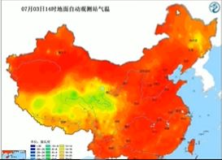

中国天气网讯 今天（3日），华北、黄淮多地出现高温天气，截至下午2点，北京、天津、郑州等地气温突增

今天，华北、黄淮一带高温持续发酵，截至今天下午2点，陕西北部、山西西南部、河北南部，北京
在阳光暴晒下，地表温度也逐渐走高，今天下午两点，华北黄淮大部份地区地表温度都在50度以上。
中国天气网气象分析师王伟跃介绍。明天(4日)，华北、黄准地区35C以上的高温天气还将继续升级。 并进入鼎盛阶段:高温强度和范围都将发展到最强。明天。 北京南部、天津大部。河北中部和南部、 山东中部和西部。山西南部局地。河南北部。东北部分地区的最高气温邮将达到成超过35C。
不过，专家提醒，济南被雨水天气完美绕开，因此未来一 周，当地的高温还会天天上岗。 在此提醒当地居民注意防暑降温，防范持续高温带来的各种不利影响。(文/张慧 数据支持/王伟跃胡啸审核/刘文静张方丽)